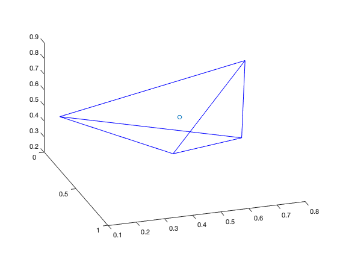
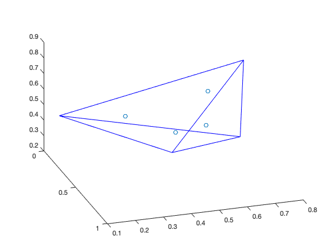
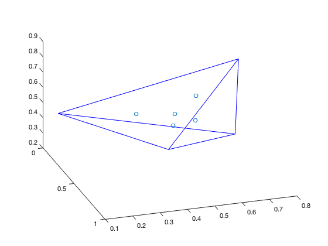

clear; close all; clc; %输入高斯点维数 nint = 1:3; %绘制随机四面体 pint = rand(3,4); % pint = [0.2511 0.3517 0.5497 0.7572; % 0.6160 0.8308 0.9172 0.7537; % 0.4733 0.5853 0.2858 0.3804;]; ix =[1 2 3 4 1 3 4 2];%四面体连线顺序 for k=1:length(nint) figure; patch('vertices', pint', 'faces', ix, 'facecolor', 'none', 'edgecolor', 'b') [D,nnde] = size(pint); %计算形函数矩阵 [g, w] = TET4_GP(k); ngp = size(g,1); Xi = g; Xi = [Xi,(1-sum(Xi,2))]; %初始化高斯点坐标矩阵 gint = zeros(ngp,D); %计算高斯点坐标 for i = 1:ngp for j = 1:nnde gint(i,:) =gint(i,:)+(Xi(i,j)*pint(:,j))'; end end %绘制高斯点 hold on scatter3(gint(:,1),gint(:,2),gint(:,3),50) view(72,35); end % 贡献：欧阳学龙 熊志浩  